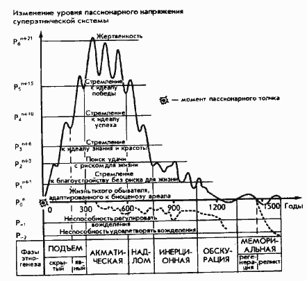

Л.Гумилев От Руси до России
ВМЕСТО ПРЕДИСЛОВИЯ Сегодня в нашей стране наблюдается небывалый рост интереса к истории. Чем он вызван, на чем основан? Часто можно слышать, что, запутавшись в проблемах современных, люди обращаются к истории в поисках выхода из тяжелых ситуаций, как говорили в старину, "за поучительными примерами". Пусть так, но в таком случае интерес к истории свидетельствует и о другом: современность и история воспринимаются большинством наших соотечественников как принципиально разные, несовместимые временные стихии. Часто история и современность просто сталкиваются лбами: "Нам интересна только современность и нужно знание только о ней!" Похожие суждения можно услышать и в ученом споре, и в беседе за чаем, и даже в базарной склоке. Действительно, для противопоставления современности и истории есть некоторые основания. Само слово "история" подразумевает "бывшее раньше", "несегодняшнее", а значит, историческая наука немыслима без учета изменений, отделяющих "вчера" от "сегодня". Количество и масштабы этих изменений могут быть ничтожны, но вне их история не существует. Говоря "современность", мы, напротив, имеем в виду некоторую привычную и кажущуюся нам стабильной систему взаимоотношений внутри страны и вне ее. Вот это-то привычное, знакомое, почти неизменное и понятное и противопоставляется обычно истории чему-то неочевидному, неосязаемому и потому непонятному. А дальше просто: если мы не можем с современной точки зрения объяснить действия исторических персонажей, это значит, что они не были образованны, обладали многочисленными сословными предрассудками и вообще жили без благ Научно-технического прогресса. Тем хуже для них! И ведь мало кому приходит в голову, что в свое время прошлое тоже было современностью. Значит, видимое постоянство современности - обман, и сама она ничем не отличается от истории. Все хваленое настоящее - лишь момент, тут же становящийся прошлым, а вернуть сегодняшнее утро ничуть не легче, чем в эпоху Пунических или наполеоновских войн. И, как это ни парадоксально, именно современность мнима, а история - реальна. Для нее характерна смена эпох, когда внезапно рушится равновесие народов и держав: малые племена совершают великие походы и завоевания, а могучие империи оказываются бессильными; одна культура сменяет другую, а вчерашние боги становятся никчемными истуканами. Чтобы понять исторические закономерности, работали поколения настоящих ученых, книги которых до сих пор находят своего читателя. Итак, история - это постоянные изменения, вечная перестройка кажущейся стабильности. Взглянув в каждый отдельный момент на определенную территорию, мы видим как бы фотографический снимок - относительно устойчивую систему из взаимосвязанных объектов: географических (ландшафтов), социально-политических (государств), экономических, этнических. Но как только мы начинаем изучать не одно состояние, а множество их, то есть процесс, картина резко меняется и начинает напоминать скорее детский калейдоскоп, а не строгое картографическое изображение с сухими надписями. Взглянем, к примеру, на Евразию в начале 1 в. н.э. Западную оконечность великого Евразийского континента занимала Римская империя. Эта держава, выросшая из крошечного городка, основанного племенем латинов за восемь столетий до нашей эры, вобрала в себя множество народов. В состав империи органично влились культурные эллины, остававшиеся в общем лояльными подданными очень долгое время. С германцами же, жившими за Рейном, римляне, напротив, начали воевать. И хотя их победоносные полководцы Германик и будущий император Вместо предисловия Тиберий доходили во главе легионов до Эльбы, уже к середине 1 в. н.э. от покорения германцев римляне отказались. К востоку от германцев обитали славянские племена. Римляне называли их, как и германцев, варварами, но в действительности это был совершенно другой народ, отнюдь не друживший с германцами. Еще восточнее, в беспредельных степях Причерноморья и Казахстана, мы обнаруживаем в это время народ, мало напоминающий европейский, - сарматов. А на границе с Китаем, на территории нынешней Монголии, кочевал народ хунны. Восточная окраина Евразии, так же как и западная, была занята огромной державой - империей Хань. Китайцы, подобно римлянам, считали себя культурным, цивилизованным народом, живущим среди окружающих их варварских племен. Друг с другом римляне и китайцы практически не сталкивались, однако связь между ними все же была. Нитью между двумя империями, невидимой, но прочной, стал Великий шелковый путь. По нему ки- тайский шелк тек в Средиземноморье, оборачиваясь золотом и предметами роскоши. Но и на Великом шелковом пути китайцы и римляне не встречались, ибо ни те, ни другие не ходили с караванами. С ними ходили согдийцы - обитатели Средней Азии - и евреи, осваивавшие международную торговлю. Под их руководством караваны пересекали огромные пространства континента. А на окраинах его, в римских крепостях и на Великой китайской стене, часовые день и ночь охраняли покой "цивилизованных" империй. Зададимся простым вопросом: а что помешало этой отлаженной статичной системе отношений дожить до нашего времени? Почему мы сегодня не видим ни римлян, ни Великого шелкового пути? Да потому, что уже в конце 1 - начале II в. н.э. положение изменилось принципиально: пришли в движение многие народы, дотоле спокойно жившие в привычных им условиях. Десантом готов - обитателей Скандинавии - в устье Вислы началось Великое переселение народов, ставшее в IV в. причиной гибели единой Римской империи. Тогда же начали свое продвижение и славяне, покидавшие территорию между Вислой и Тисой и распространившиеся впоследствии от Балтики на севере до Адриатики и Балкан на юге, от Эльбы на западе до Днепра на востоке. Племя даков, занимавшее территорию современной Румынии, начало войну с Римом, и империи потребовалось 20 лет борьбы, чтобы силами всего Средиземноморья, объединенными военным и государственным гением императора Траяна, победить этот народ. Из возникших в Сирии и Палестине христианских общин к тому времени возник новый этнос - "этнос по Христу". Носители некогда преследовавшегося учения сумели не только сохранить его, но и сделать официальной идеологией в одной из частей распавшейся империи. Так в противовес умирающему Западному Риму - Гесперии - возникла новая, христианская держава - Византия. В той же Палестине возник очаг сопротивления римскому господству. Небольшой народ - иудеи - после двух восстаний, жестоко подавленных римлянами, покинул свою историческую родину. Но появление иудейской диаспоры и проповедь христианства обернулись для римлян усилением позиций восточных религий в самом центре империи и в ее провинциях. Не только Ближний, но и Дальний Восток стал в это время источником бед для Рима. Ветвь хуннов, покинув степи Монголии, в результате беспримерной миграции оказалась в Европе. Уже в IV в. их потомки сокрушили королевство готов и едва не уничтожили саму Римскую империю. Таким образом, если мы попытаемся представить себе Евразию V-VI вв., то увидим картину, совершенно не похожую на ту, что была в 1 в. Новые империи располагаются на окраинах континента, совсем другие народы кочуют по просторам Великой степи. Вся история человечества состоит из череды подобных изменений. Может быть, смена империй и царств, вер и традиций не имеет никакой внутренней закономерности, а представляет собой не поддающийся объяснению хаос? Издавна люди пытливые (а такие есть всегда) стремились найти ответ на этот вопрос, понять и объяснить истоки своей истории. Ответы получались, естественно, разные, ибо история многогранна: она может быть историей социально-экономических формаций или военной историей, то есть описанием походов и сражений; историей техники или культуры; историей литературы или религии. Все это - разные дисциплины, относящиеся к истории. И потому одни - историки юридической школы - изучали человеческие законы и принципы государственного устройства; другие - историки-марксисты - рассматривали историю сквозь призму развития производительных сил; третьи опирались на индивидуальную психологию и т.д. А можно ли представить человеческую историю как историю народов? Попробуем исходить из того, что в пределах Земли пространство отнюдь не однородно. И именно пространство - это первый параметр, который характеризует исторические события. Еще первобытный человек знал границы территории своего обитания, так называемый кормящий и вмещающий ландшафт, в котором жил он сам, жили его семья и его племя. Второй параметр - время. Каждое историческое событие происходит не только где-то, но когда-то. Те же первобытные люди вполне сознавали не только "свое место", но и то, что у них есть отцы и деды и будут дети и внуки. Итак, временные координаты существуют в истории наряду с пространственными. Но в истории есть еще один, не менее важный параметр. С географической точки зрения, все человечество следует рассматривать как антропосферу - одну из оболочек Земли, связанную с бытием вида Homo sapiens. Человечество, оставаясь в пределах этого вида, обладает замечательным свойством - оно мозаично, то есть состоит из представителей разных народов, говоря по-современному, этносов. Именно в рамках этносов, контактирующих друг с другом, творится история, ибо каждый исторический факт есть достояние жизни конкретного народа. Присутствие в биосфере Земли этих определенных целостностей - этносов - составляет третий параметр, характеризующий исторический процесс. Этносы, существующие в пространстве и времени, и есть действующие лица в театре истории. В дальнейшем, говоря об этносе, мы будем иметь в виду коллектив людей, который противопоставляет себя всем другим таким же коллективам, исходя не из сознательного расчета, а из чувства комплиментарности - подсознательного ощущения взаимной симпатии и общности людей, определяющего противопоставление "мы - они" и деление на "своих" и "чужих". Каждый такой коллектив, чтобы жить на Земле, должен приспособиться (адаптироваться) к условиям ландшафта, в пределах которого ему приходится жить. Связи этноса с окружающей природой и рождают пространственные взаимоотношения этносов между собой. Но естественно, что, живя в своем ландшафте, члены этноса могут приспособиться к нему, только изменяя свое поведение, усваивая какие-то специфические правила поведения - стереотипы. Усвоенные стереотипы (историческая традиция) составляют основное отличие членов одного этноса от другого. Чтобы описать свою историческую традицию, членам этноса становится необходима система отсчета времени. Легче всего учитывать временные циклы. Простые наблюдения показывают, что день и ночь составляют повторяющийся цикл - сутки. Подобно этому времена года, сменяясь, составляют больший цикл - год. Из-за этой простоты и очевидности первый известный людям счет времени, употребляющийся до сих пор, - это счет циклический. (С представлением о цикличности времени связано само происхождение русского слова "время", однокоренного со словами "вертеть" и "веретено".) На Востоке, например, была изобретена система отсчета времени, при которой каждый из 12 годов носит название того или иного зверя, изображаемого определенным цветом (белый - металл, черный - земля, красный - огонь, сине-зеленый - растительность). Но поскольку этнос живет очень долго, ни годового, ни даже двенадцатилетнего цикла восточных народов часто было недостаточно, чтобы описать хранящиеся в памяти людей события. В поисках выхода из этого тупика начали применять линейное измерение времени, при котором отсчет ведется от определенного момента в историческом прошлом. Для древних римлян эта условная дата - основание Рима, для эллинов - год первой Олимпиады. Мусульмане считают годы от Хиджры - бегства пророка Мухаммеда из Мекки в Медину. Христианское летосчисление, которым пользуемся мы, ведет счет от Рождества Христова. О линейном измерении времени можно сказать лишь то, что, в отличие от циклического, оно подчеркивает необратимость времени. На Востоке существовал еще один способ осознания и отсчета времени. Вот пример такого исчисления. Царевна из южнокитайской династии Чэн, уничтоженной северной династией Суй, попала в плен. Она была отдана в жены тюркскому хану, желавшему породниться с китайской императорской семьей. Царевна скучала в степях и сочиняла стихи. Одно из ее стихотворений звучит так:
Здесь течение времени рассматривается как колебательное движение, а определенные временные отрезки выделяются в зависимости от насыщенности событиями. При этом создаются большие дискретные "участки" времени. Китайцы называли все это одним легким словом - "превратность". Каждая "превратность" происходит в тот или иной момент исторического времени и, начавшись, неизбежно кончается, сменяясь другой "превратностью". Такое ощущение дискретности (прерывности) времени помогает фиксировать и понимать ход исторических событий, их взаимосвязь и последовательность. Но, говоря о прерывистом времени, времени линейном или циклическом, надо помнить, что речь идет лишь о созданных человеком системах отсчета. Единое абсолютное время, исчисляемое нами, остается реальностью, не пре- вращаясь в математическую абстракцию, и отражает историческую (природную) действительность. Так, прерывистое время равно применимо и к человеческой истории, и к истории природы. Хорошо описанная историческая геология оперирует эрами и периодами, в каждый из которых биосфера Земли имела особый характер. Это или ^влажный" карбон с обилием крупных амфибий (земноводных), или "сухой" пермский период с крупными рептилиями (пресмыкающимися), обитавшими вблизи водоемов. В трех периодах мезозойской эры: триасе, юре и меле - каждый раз возникала новая флора и новая фауна. Ледниковый период вновь изменил животный и растительный мир Земли. До этого периода в Африке обитали австралопитеки, отдаленно напоминавшие современного человека. После ледникового периода появились неандертальские люди с огромной головой и сильным коренастым туловищем. При неизвестных нам обстоятельствах неандертальцы исчезли и сменились людьми современного типа - людьми разумными. В Палестине сохранились материальные следы столкновения двух видов людей: разумных и неандертальских. В пещерах Схул и Табун на горе Кармель обнаружены останки помесей двух видов. Трудно представить условия появления этого гибрида, особенно если учитывать, что неандертальцы были каннибалами. В любом случае новый, смешанный вид оказался нежизнеспособным. Итак, неандертальцы исчезли, и в наше время Земля заселена людьми хотя и пяти разных рас, но принадлежащими к одному биологическому виду. Следовательно, мы вправе считать, что прямой преемственности между неандертальцами и современными людьми нет. Но точно так же нет ее и между кроманьонскими охотниками на мамонтов и древними кельтами, между римлянами и румынами, между хуннами и мадьярами. В истории этносов (народов), как и в истории видов, мы сталкиваемся с тем, что время от времени на определенных участках Земли идет абсолютная ломка, когда старые этносы исчезают и появляются новые. Древности принадлежат филистимляне и халдеи, македоняне и этруски. Их сейчас нет, но когда-то не было англичан и французов, шведов и испанцев. Итак, этническая история состоит из "начал" и "концов". Но откуда же и почему возникают эти новые общности, вдруг начинающие отделять себя от соседей: "Э, нет, знаем мы вас: вы - немцы, а мы - французы!"? Понятно, что любой этнос имеет предка, даже не одного, а нескольких. Например, для русских предками были и древние русичи, и выходцы из Литвы и Орды, и местные финно-угорские племена. Однако установление предка не исчерпывает проблемы образования нового этноса. Предки есть всегда, а этносы образуются достаточно редко и во времени, и в пространстве. Казалось бы, на поставленный вопрос нет ответа, но вспомним, что точно так же сто лет назад не было ответа на вопрос о происхождении видов. В прошлом веке, в эпоху бурного развития теории эволюции, как до, так и после Дарвина, считалось, что от- дельные расы и этносы образуются вследствие борьбы за существование. Сегодня эта теория мало кого устраивает, так как множество фактов говорит в пользу иной концепции - теории мутагенеза. В соответствии с ней каждый новый вид возникает как следствие мутации - внезапного изменения генофонда живых существ, наступающего под действием внешних условий в определенном месте и в определенное время. Конечно, наличие мутаций не отменяет внутривидового процесса эволюции: если появившиеся признаки повышают жизнеспособность вида, они воспроизводятся и закрепляются в потомстве на достаточно долгое время. Если это не так - носители их вымирают через несколько поколений. Теория мутагенеза хорошо согласовывается с известными фактами этнической истории. Вспомним уже упоминавшийся пример миграций в 1-II вв. н.э. Мощное движение новых этносов имело место сравнительно недолго и только в узкой полосе от южной Швеции до Абиссинии. Но ведь именно это движение погубило Рим и изменило этническую карту всего европейского Средиземноморья. Следовательно, начало этногенеза мы также можем гипотетически связать с механизмом мутации, в результате которой возникает этнический "толчок", ведущий затем к образованию новых этносов. Процесс этногенеза связан с вполне определенным генетическим признаком. Здесь мы вводим в употребление новый параметр этнической истории - пассионарность. Пассионарность - это признак, возникающий вследствие мутации (пассионарного толчка) и образующий внутри популяции некоторое количество людей, обладающих повышенной тягой к действию. Мы назовем таких людей пассионариями. Пассионарии стремятся изменить окружающее и способны на это. Это они организуют далекие походы, из которых возвращаются немногие. Это они борются за покорение народов, окружающих их собственный этнос, или, наоборот, сражаются против захватчиков. Для такой деятельности требуется повышенная способность к напряжениям, а любые усилия живого организма связаны с затратами некоего вида энергии. Такой вид энергии был открыт и описан нашим великим соотечественником академиком В. И. Вернадским и назван им биохимической энергией живого вещества биосферы. Механизм связи между пассионарностью и поведением очень прост. Обычно у людей, как у живых организмов, энергии столько, сколько необходимо для поддержания жизни. Если же организм человека способен "вобрать" энергии из окружающей среды больше, чем необходимо, то человек формирует отношения с другими людьми и связи, которые позволяют применить эту энергию в любом из выбранных направлений. Возможно и создание новой религиозной системы или научной теории, и строительство пирамиды или Эйфелевой башни и т.д. При этом пассионарии выступают не только как непосредственные исполнители, но и как организаторы. Вкладывая свою избыточную энергию в организацию и управление соплеменниками на всех уровнях социальной иерархии, они, хотя и с трудом, вырабатывают новые стереотипы поведения, навязывают их всем остальным и создают таким образом новую этническую систему, новый этнос, видимый для истории. Но уровень пассионарности в этносе не остается неизменным (см. рисунок). Этнос, возникнув, проходит ряд закономерных фаз развития, которые можно уподобить различным возрастам человека. Первая фаза - фаза пассионарного подъема этноса, вызванная пассионарным толчком. Важно заметить, что старые этносы, на базе которых возникает новый, соединяются как сложная система. Из подчас непохожих субэтнических групп создается спаянная пассионарной энергией целостность, которая, расширяясь, подчиняет территориально близкие народы. Так возникает этнос. Группа этносов в одном регионе создает суперэтнос (так, Византия - суперэтнос, возникший в результате толчка в 1 в. н.э., состоял из греков, египтян, сирийцев, грузин, армян, славян и просуществовал до XV в.). Продолжительность жизни этноса, как правило, одинакова и составляет от момента толчка до полного разрушения около 1500 лет, за исключением тех случаев, когда агрессия иноплеменников нарушает нормальный ход этногенеза.  Наибольший подъем пассионарности - акматическая фаза этногенеза - вызывает стремление людей не создавать целостности, а, напротив, "быть самими собой": не подчиняться общим установлениям, считаться лишь с собственной природой. Обычно в истории эта фаза сопровождается таким внутренним соперничеством и резней, что ход этногенеза на время тормозится. Постепенно вследствие резни пассионарный заряд этноса сокращается, ибо люди физически истребляют друг друга. Начинаются гражданские войны, и такую фазу мы назовем фазой надлома. Как правило, она сопровождается огромным рассеиванием энергии, кристаллизующейся в памятниках культуры и искусства. Но внешний расцвет культуры соответствует спаду пассионарности, а не ее подъему. Кончается эта фаза обычно кровопролитием; система выбрасывает из себя излишнюю пассионарность, и в об- ществе восстанавливается видимое равновесие. Этнос начинает жить "по инерции", благодаря приобретенным ценностям. Эту фазу мы назовем инерционной. Вновь идет взаимное подчинение людей друг другу, происходит образование больших государств, создание и накопление материальных благ. Постепенно пассионарность иссякает. Когда энергии в системе становится мало, ведущее положение в обществе занимают субпассионарии - люди с пониженной пассионарностью. Они стремятся уничтожить не только беспокойных пассионариев, но и трудолюбивых гармоничных людей. Наступает фаза обскурации, при которой процессы распада в этносоциальной системе становятся необратимыми. Везде господствуют люди вялые и эгоистичные, руководствующиеся потребительской психологией. А после того как субпассионарии проедят и пропьют все ценное, сохранившееся от героических времен, наступает последняя фаза этногенеза - мемориальная, когда этнос сохраняет лишь память о своей исторической традиции. Затем исчезает и память: приходит время равновесия с природой (гомеостаза), когда люди живут в гармонии с родным ландшафтом и предпочитают великим замыслам обывательский покой. Пассионарности людей в этой фазе хватает лишь на то, чтобы поддерживать налаженное предками хозяйство. Новый цикл развития может быть вызван лишь очередным пассионарным толчком, при котором возникает новая пассионарная популяция. Но она отнюдь не реконструирует старый этнос, а создает новый, давая начало очередному витку этногенеза - процесса, благодаря которому Человечество не исчезает с лица Земли. Рik - уровень пассионарного напряжения системы. Качественные характеристики этого уровня ("жертвенность" и т.д.) следует рассматривать как некую усредненную "оценку" представителей этноса. Одновременно в составе этноса есть люди, обладающие и другими отмеченными на рисунке характеристиками, но господствует один тип людей; i - индекс уровня пассионарного напряжения системы, соответствующего определенному императиву поведения; i = -2, -1, 0, ... , 6; при i = 0 уровень пассионарного напряжения системы соответствует гомеостазу; k - количество субэтносов, составляющих систему на определенном уровне пассионарного напряжения; k == п+1, п+2, ... ,п+21, где п - первоначальное количество субэтносов в системе. Примечание. Данная кривая - обобщение сорока индивидуальных кривых этногенеза, построенных нами для различных этносов. Пунктиром обозначено падение пассионарности ниже уровня гомеостаза, наступающее вследствие этнического смещения (внешней агрессии). |
|